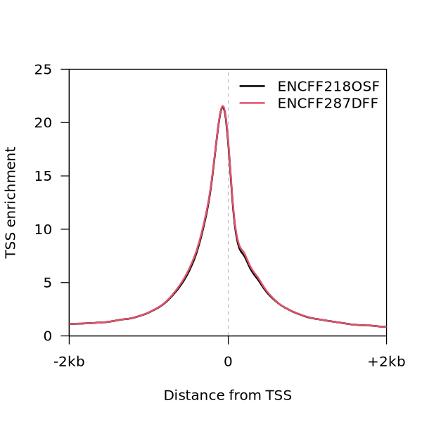

02 Post-alignment QC
In this chapter you will learn how to perform quality control (QC) of the aligned reads, check for signal enrichment and generate ATAC-seq signal tracks to be viewed using a genome browser.
Learning objectives
- Check number of aligned reads
- Check insert size distribution
- Calculate TSS enrichment
- Generate bigWigs
Before we begin, let’s create a directory where we will store the results from this section
RESULTS=results/02_post_alignment_qc
mkdir -p $RESULTS1 Working with BAM files
The SAM/BAM (Sequence/Binary Alignment Map) format is the most common alignment file format. SAM is a text format which can be viewed directly with any text editor while BAM is compressed binary format for which we need specific tools. For SAM/BAM manipulation, viewing, and querying we use SAMtools [1].
The SAM/BAM file consists of the header and the alignment section. The header contains file matadata such as format version, sort order of the alignments, information about the reference sequences used, the read group etc. The alignment section contains detailed mapping (alignment) information for each read such as the location on the reference sequence where it is aligned to, read length, information about mismatches/gaps/inserts etc, mapping quality, etc. Detailed information on the SAM specification can be found here.
Here are some things we can do with SAMtools: 1. View SAM/BAM files 2. Count reads 3. Get summary statistics 4. Calculate fragment size distribution 6. Calculate TSS enrichment
And many more! You can find out more about the SAMtools tools here
1.1 Count number of aligned reads
One of the first step we need to do upon alignment is to figure out if we have sufficient amount of reads for downstream analysis. If the read number is low then any calculations, particularly for genome-wide application, will probably be underpowered. According to ENCODE data standards for ATAC-seq, for a successfull ATAC-seq library we need 25 million non-duplicate, non-mitochondrial aligned reads for single-end sequencing and 50 million for paired-ended sequencing (i.e. 25 million fragments)
Q: Do you know the difference between, read, fragment and insert?
Let’s count how many reads we have in one of our BAM files
DATADIR=data
BAM=$DATADIR/ENCSR558ZSN/ENCFF218OSF.bam
samtools view -c -@ 6 $BAM680690081.2 Get alignment summary stats
Just getting the number of reads in a BAM file is not enough. A BAM file will contain all the input reads but this does not mean all the reads are aligned. To get a break down of the alignment events in the BAM file we count the different alignment flags. Flags are bitwise attributes that encode an alignment description such as whether the read is mapped or not, whether it is a PCR duplicate, whether it is read1 or read2 etc. More information about the SAM Flags can be found here.
samtools flagstat -@ 6 $BAM68069008 + 0 in total (QC-passed reads + QC-failed reads)
68069008 + 0 primary
0 + 0 secondary
0 + 0 supplementary
0 + 0 duplicates
0 + 0 primary duplicates
68069008 + 0 mapped (100.00% : N/A)
68069008 + 0 primary mapped (100.00% : N/A)
68069008 + 0 paired in sequencing
34034504 + 0 read1
34034504 + 0 read2
68069008 + 0 properly paired (100.00% : N/A)
68069008 + 0 with itself and mate mapped
0 + 0 singletons (0.00% : N/A)
0 + 0 with mate mapped to a different chr
0 + 0 with mate mapped to a different chr (mapQ>=5)In these files, the reads are already filtered. Some typical filtering criteria of ATAC seq aligned reads include: * Filter for uniquely mapped reads with end-to-end alignment. * Remove reads mapping to mitochondrial DNA. * Remove PCR duplicates.
This is how the command would look like:
samtools view \
-bh \ # Return BAM file and include header
-f 2 \ # Include reads that are mapped in proper pair
-F 1024 \ # Exclude reads that are PCR or optical duplicates
-o filtered.bam \ # Define output file
unfiltered.bam1.3 Indexing BAM files
The speed of reading BAM files relies on an index which allows quick query of coordinate sorted reads. The index files have the .bai extension. Many downstream analyses and tools rely on the index for fast BAM querying so it is important to always index the BAM files.
To generate index files the BAM should be coordinate sorted. Let’s look at the BAM header and find the line where it reports the sort order (SO:).
BAM=data/ENCSR558ZSN/ENCFF218OSF.bam
samtools view -H $BAM | grep SO:@HD VN:1.6 SO:coordinateGreat! This means that these are coordinate sorted, i.e. sorted by chromosome (seqname) name first, then by start coordinate. Now we can index the BAM file
cd data/ENCSR558ZSN/
samtools index ENCFF218OSF.bam
cd ../../2 Checking insert sizes
picard CollectInsertSizeMetrics \
-I ${BAM} \
-O ${RESULTS}/ENCFF218OSF.insert.stats \
-H ${RESULTS}/ENCFF218OSF.insert.png \
-M 0.5{kind=link}
What do the different peaks in the histogram represent?
3 Generate bigWig density tracks
The simplest way to check if your ATAC seq experiment is successfull, is to load the data in your favorite genome browser (UCSC, or IGV) and look for signal enrichment across the genome. To do that, we need to convert the mapped reads into a density track (i.e. frequency of aligned reads/gragments per base or per bin). This essentially counts how many aligned fragments pile up over a genomic position or bin. In this example we will use deepTools to do this which has a very convenient tool to do this while also normalizing BAM files for read depth.
for BAM in data/ENCSR*/*bam; do
NAME=$(basename $BAM .bam)
DIR=$(dirname $BAM)
BAI=${BAM}.bai
# Check if index exists and generate it if not
if [ ! -f ${BAI} ]; then
samtools index -@ 6 -o ${DIR}/${NAME}.bam.bai ${BAM}
fi
bamCoverage \
-b ${BAM} \
-bs 10 \
-p 6 \
--effectiveGenomeSize 2913022398 \
--normalizeUsing RPGC \
--skipNAs \
-o ${RESULTS}/${NAME}.RPGC.bs10.bw
done4 Calculate TSS enrichment
The Transcription Start Site is the location on the gene body where DNA transcription to RNA is initiated. These are open chromatin sites and they should show enrichment in ATAC NFR (nucleosome-free reads). According to ENCODE standards, for an ideal ATAC seq experiment aligned against the GRCh38 reference human genome, normalized enrichment around the TSS should be above 7. Any value between 5-7 is also acceptable while anything below 5 indicates a failed library. More details can be found here.
To calculate the enrichment around TSS we first need to download a gene annotation reference for GRCh38. Let’s download the GENCODE v46 from UCSC Genome Browser.
wget -P data/annotations/hg38/gencode https://ftp.ebi.ac.uk/pub/databases/gencode/Gencode_human/release_46/gencode.v46.basic.annotation.gtf.gzThen, we need to calculate the density in binned windows (±2000bp, 10bp bins) around the point of interest. In this case it’s all the TSS listed in the Gencode annotation. Again, we are going to use another convenient function from deepTools which calculates the signal (ATACseq) density over these bins across all TSSs.
computeMatrix reference-point \
-R data/annotations/hg38/gencode/gencode.v46.basic.annotation.gtf.gz \
-S results/02_post_alignment_qc/*.bw \
--referencePoint TSS \
-b 2000 \
-a 2000 \
-bs 10 \
--outFileName results/02_post_alignment_qc/gencode.v46.TSS.enrichment.txt.gz \
--missingDataAsZero \
--skipZeros \
--smartLabels \
--metagene \
-p 24 # Number of processorsNow, in order to calculate the normalized enrichment, we need to divide all values per bin by the average of the leftmost 10 bins (100bp) and rightmost 10 bins and divide all bins with this normaliztion factor. This replicates the way ENCODE calculates TSS enrichment. For details see this thread.
For this part we will work in R.
module load gcc r/4.2.2-2oxptjk
RThen, within R type the following:
# Install and load required packages
if (!require("data.table", quietly = TRUE)) {
install.packages("data.table")
}
if (!require("BiocManager", quietly = TRUE)) {
install.packages("BiocManager")
}
if (!require("remotes", quietly = TRUE)) {
install.packages("remotes")
}
if (!require("R.utils", quietly = TRUE)) {
install.packages("R.utils")
}
if (!require("GenomicRanges", quietly = TRUE)) {
BiocManager::install("GenomicRanges")
}
if (!require("Matrix", quietly = TRUE)) {
remotes::install_version("Matrix", version = "1.6", repos = "http://cran.us.r-project.org")
}
library(data.table)
library(GenomicRanges)
# Load a function that imports and parses the `computeMatrix` output
source("https://raw.githubusercontent.com/ggeorgol/ggutils/main/import_computeMatrix.R")
# Load `computeMatrix` output
mtx <- import_computeMatrix("results/02_post_alignment_qc/gencode.v46.TSS.enrichment.txt.gz", sparse = FALSE)
samples <- mtx$sample_labels
png("results/02_post_alignment_qc/gencode.v46.TSS.enrichment.png", res = 120, height = 600, width = 600)
par(las = 1, lend = 1)
plot(0, type = "n", xlim = c(1, 400), ylim = c(0, 25),
xaxt = "n", xaxs = "i", yaxs = "i",
xlab = "Distance from TSS", ylab = "TSS enrichment")
abline(v = 201, lty = 2, col = "grey")
cols <- setNames(seq_along(samples),
nm = gsub("\\..*", "", samples))
i <- 1
for (sample in samples) {
z <- mtx$data[[sample]]$genes
z[is.na(z)] <- 0
cmu <- colMeans(z)
norm <- mean(c(cmu[1:10], cmu[391:400]))
cmu_norm <- cmu/norm
lines(cmu_norm, col = cols[i], lwd = 2)
i <- i + 1
}
axis(side = 1, at = c(1,201,400), labels = c("-2kb", "0", "+2kb"))
legend("topright", legend = names(cols), col = cols, bty = "n", seg.len = 2, lwd = 2)
dev.off()